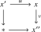
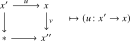
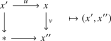
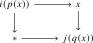
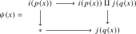
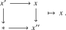
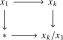
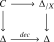
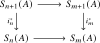

Definition 20.4.1. A short exact sequence in a Waldhausen category \(A\) is a pushout square of the form
 
The proofs of the following lemma are obvious and they are only stated for the record.
Lemma 20.4.2. We denote by \(0\) the Waldhausen category with underlying category \([0]\), Then \(0\) is both an initial and a terminal object of \(\WaldCat\)
Lemma 20.4.3. If \(A\) and \(B\) are Waldhausen categories, then the cartesian product of the underlying small categories \(A\times B\) is canonically endowed with the structure of a Waldhausen category through \[ w(A\times B)=wA\times wB\quadtext{and} c(A\times B)=cA\times cB \] The projections \(\pr_{1}\colon A\times B\to A\) and \(\pr_{2}\colon A\times B\to B\) are morphisms of Waldhausen categories and exhibit \(A\times B\) as the cartesian product of \(A\) and \(B\) in \(\WaldCat\). Dually, the two functors \[ i_1\colon A\to A\times B\ , \quad x\mapsto(x,*)\quadtext{and} i_2\colon B\to A\times B\, , \quad y\mapsto(*,y) \] are morphisms of Waldhausen categories and exhibit \(A\times B\) as the coproduct of \(A\) and \(B\) in \(\WaldCat\).
In other words:
Proposition 20.4.4. The category \(\WaldCat\) is semiadditive.
In particular, any full subcategory of \(\WaldCat\) stable under finite coproducts is semiadditive as well.
Definition 20.4.5. An admissible class of Waldhausen categories is a family of Waldhausen categories stable under finite products as well as under the operators \(\Wald([n],-)\) and \(w([n],-)\) for all \(n : \N\). Given such a class \(C\), we define \(\WaldCat_C\) as the full subcategory of \(\WaldCat\) with objects the terms of \(C\).
Example 20.4.6. Stable categories form an admissible class. In this case, we simply have \(\StabCat=\WaldCat_C\). Therefore, any family of stable categories closed under finite products and under the operator \(\Fun([n],-)\) is admissible. For instance, compact objects in \(\StPrL_\omega\) for a small admissible class.
Definition 20.4.7. Let \(C\) be an admissible class of Waldhausen categories and \(D\) a pointed category with finite limits. A functor \(E\colon\WaldCat_C\to D\) is additive it satisfies the following properties.
(1) It preserves finite products.
(2) For any Waldhausen category \(A\), the functor \[ A\to w([1],A)\ , \quad x\mapsto\id_x \] induces an equivalence of type \[ E(A)\cong E(w([1],A))\, . \]
(3) For any Waldhausen category \(A\) the functor \[ (\ker,\coker)\colon\ExactSeq(A)\to A\times A \] defined by the assignment

induces an equivalence of type \[ E(\ExactSeq(A))\cong E(A)\times E(A)\, . \]
if it preserves finite products and if, for any Waldhausen category \(A\) the functor \[ (\ker,\coker)\colon\ExactSeq(A)\to A\times A \] defined by the assignment induces an equivalence of type \[ E(\ExactSeq(A))\cong E(A)\times E(A)\, . \]
Proposition 20.4.8. The property of being additive is preserved by small sifted colimits in the category of functors from \(\WaldCat_C\) to \(\An_{\bullet}\).
Proof
Since colimits in \(\Fun(\WaldCat_C,\An_{\bullet})\) are computed pointwise and since the property of being additive is expressed by the invertibility of functorially given maps between finite products of evaluations, this follows right away from the fact that small sifted colimits commute with finite products in \(\An_{\bullet}\).
Lemma 20.4.9. Let \(C\) be an admissible class of Waldhausen categories. For any finite products preserving functor \[ F\colon\WaldCat_C\to \An_{\bullet}\, , \] if \(F\) is additive then the functor \[ A\mapsto \underset{[n] : \Delta\catop}{\colim}\, F(\Scons_n(A)) \] is additive as well.
Proof
This follows immediately from Proposition 20.4.8, once we have noticed that \(\Delta\catop\) if sifted, and that the operators \(\Scons_n\) and \(w_m\) commute with finite products as well as with the operator \(\ExactSeq\).
Proposition 20.4.10. Let \(F\colon\WaldCat_C\to D\) be an additive functor. We consider two morphisms \[ p\colon A\to A'\quadtext{and} q\colon A\to A'' \] in \(\WaldCat_C\) together with the following extra data.
(i) There are given maps \(i\colon A'\to A\) and \(j\colon A''\to A\) such that \(i\) is a section of \(p\) and \(j\) a section of \(q\).
(ii) Each composition \(p\circ j\) and \(q\circ i\) vanishes (i.e. is isomorphic to the constant functor with value the terminal object).
(iii) There is given a map \[ \varphi\colon A\to\ExactSeq(A) \] so that \(\varphi(x)\) is an exact sequence of the form

for all \(x : A\). Then \(p\) and \(q\) together induce an equivalence of type \[ F(A)=F(A')\times F(A'')\, . \]
Proof
Since \(p\) and \(q\) commute with finite coproducts, condition (ii)
ensures that the functor
\[
u\colon A'\times A''\to A\ , \quad (x,y)\mapsto i(x)\amalg j(y)
\]
defines a section of the functor
\[
(p,q)\colon A\to A'\times A''\, .
\]
It suffices to check that the composition of \(u\circ (p,q)\) becomes the identity of \(F(A)\) after
applying \(F\).
We define a functor
\[
\psi\colon A\to\ExactSeq(A)
\]
by the rule below.
 
Corollary 20.4.11. We consider an additive functor of the form \[ F\colon\WaldCat_C\colon\to D\, . \] Let \(n : \N\) and \(i_n\colon [n]\hookrightarrow [n+1]\) the map defined by \(i_n(k)=k+1\). Then, for any Waldhausen category \(A\), the induced functor \[ i^*_n\colon F(\Scons_{n+1}(A))\to F(\Scons_n(A)) \] is equivalent over \(F(\Scons_n(A))\) to the projection \[ \pr_{1}\colon F(\Scons_n(A))\times F(\Scons_1(A))\to F(\Scons_n(A))\, . \]
Proof
The case \(n=0\) is clear so that we may assume \(n>0\).
If we identify \(\Scons_n(A)\) with \(A^{[n-1]}\), the functor \(i^*_n\)
simply restricts from \([n]\) to \([n-1]\) in the following way:
to each sequence of cofibrations
\[
x_1\to x_2\to \cdots \to x_{n+1}
\]
we form the sequence of cofibrations
\[
x_2/x_1\to \cdots\to x_{n+1}/x_1
\]
where we have formed the pushout squares

There is an obvious functor \[A^{[n-1]}\to A^{[n]}\] sending a sequence \[ y_1\to \cdots \to y_{n} \] to the sequence \[ 0\to y_1\to \cdots \to y_{n} \] and a functor \[A\to A^{[n]} \] sending a term \(z : A\) to the sequence \[ z\xrightarrow{\id_z} \cdots\xrightarrow{\id_z} z \, . \] One checks immediately that the assumptions of Proposition 20.4.10 are fulfilled and this implies this corollary.
Lemma 20.4.12. Let \(X\) be a simplicial anima. Then \(X_0\) is canonically isomorphic to the colimit of the composition \[ \Delta\catop\xrightarrow{\mathit{dec}\catop}\Delta\catop\xrightarrow{ \ X \ }\An \] where \(\mathit{dec}\colon\Delta\to\Delta\) is the functor \([n]\mapsto [0]\star [n]\).
Proof
We form the following pullback square.

Proposition 20.4.13. Let \(C\) be an admissible class of Waldhausen categories.
We consider a finite products preserving functor
\[
F\colon\WaldCat_C\to \An_{\bullet}\, .
\]
There is a canonical commutative square
 functorially in \(A\) and \(F\), that is cartesian whenever \(F\) is additive.
functorially in \(A\) and \(F\), that is cartesian whenever \(F\) is additive.
Proof
We observe that \(F(\Scons_0(A))\) is contractible for all \(A\) and thus, by virtue of
Lemma 20.4.12 there is a canonical equivalence of the form
\[
\underset{[n] : \Delta\catop}{\colim}\, F(\Scons_{n+1}(A))={*}
\]
The functorial embedding \(i_n\colon [n]\hookrightarrow [n+1]\) defined through the identification of \([n+1]\)
with \([0]\star[n]\) defines a functor
\[
i^*_n\colon\Scons_{n+1}(A)\to\Scons_n(A)
\]
functorially in \([n]\) and in \(A\).
We obtain a canonical commutative square of the form
 where the vertical maps are induced by the functors \(i^*_n\) above and the
horizontal maps are instances of the canonical map
\[
t_0\to \underset{[n] : \Delta\catop}{\colim}\, t_n
\]
for any functor \(t\colon\Delta\catop\to\An_{\bullet}\).
where the vertical maps are induced by the functors \(i^*_n\) above and the
horizontal maps are instances of the canonical map
\[
t_0\to \underset{[n] : \Delta\catop}{\colim}\, t_n
\]
for any functor \(t\colon\Delta\catop\to\An_{\bullet}\).
It suffices now to prove that the commutative square above is cartesian whenever \(F\) is
additive. By virtue of Lemma 13.4.4, it suffices to prove that, for any
additive functor \(F\colon\WaldCat_C\to\An_{\bullet}\),
and any map \(u\colon [m]\to [n]\) in \(\Delta\), the functor \(F\) sends the commutative square
of Waldhausen categories
 which is obviously cartesian.
which is obviously cartesian.
Corollary 20.4.14. For any admissible class of Waldhausen categories, the category of additive functors from \(\WaldCat_C\) to \(\An_{\bullet}\) is additive.
Proof
Since any object of \(\Add(\WaldCat_C,\An_{\bullet})\) is of the form \(\Omega^2(F)\) by the preceding proposition, we can repeat the proof of Corollary 20.2.9.